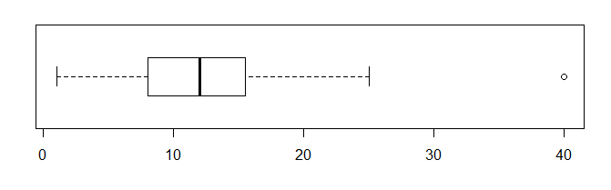
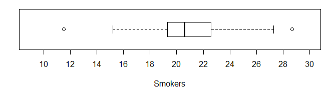
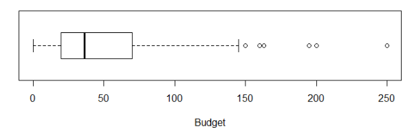
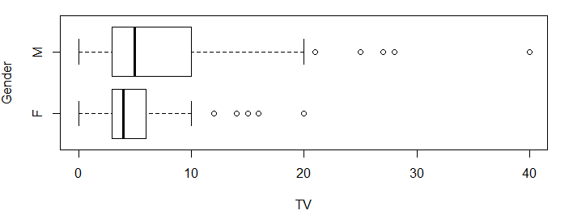
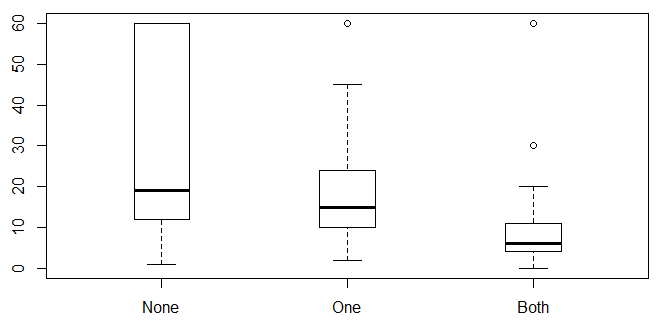
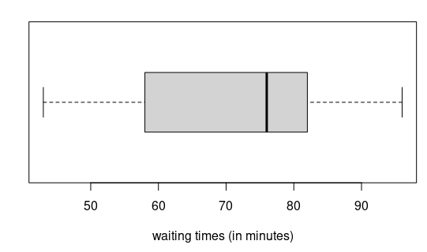
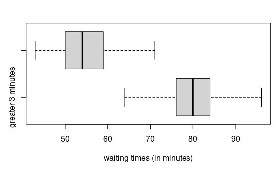
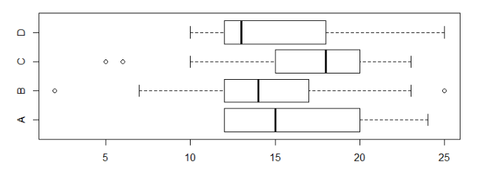
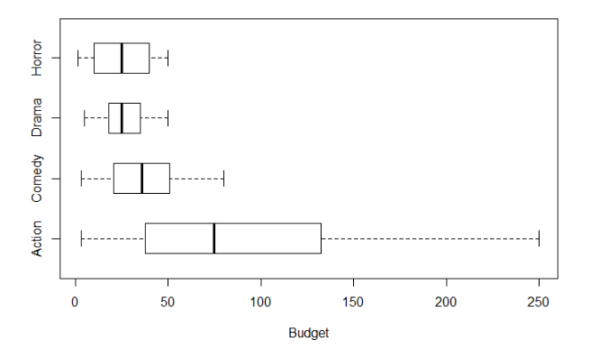

2.4 이상값과 상자그림
이 절에서 양적 변수와 범주형 변수 사이에 관계가 있는 지를 요약 통계량을 비교하거나 그래프를 그려서 알아볼 것이다. 이 작업을 시작하기 전에 양적 변수에서 이상점(outlier)을 정의하고 상자그림을 그리는 방법을 소개한다.
이상점 탐지
앞에서 소개한 포유동물의 수명 데이터에서 코끼리의 수명 \(40\)년은 다른 동물의 수명과 비교할 때 특히 높은 값이라 생각된다. 객관적으로 이 값이 이상점이라고 어떻게 결정할 수 있을까? 이상점을 판단하는 기준은 대표적인 값들의 위치와 데이터가 얼마나 넓은 범위에 퍼져 있는가를 같이 고려해야 한다. 많이 사용하는 방법은 사분위수와 사분위수범위를 사용한 다음 구간을 벗어나면 이상점으로 결정하는 것이다.
\[(Q_1 - 1.5 \times IQR,\ Q_3 + 1.5 \times IQR)\]
\(Q_1\)은 제1사분위수(\(25\) 백분위수), \(Q_3\)는 제3사분위수(\(75\) 백분위수), \(IQR\)은 사분위수범위(\(Q_3 - Q_1\))이다.
예제 2.25. 포유동물 수명 데이터에서 코끼리는 이상점인가? 그밖에 이상점이 또 있는가?
풀이 (클릭하면 풀이가 보입니다)
포유동물의 다섯 숫자 요약은 (\(1\), \(8\), \(12\), \(16\), \(40\)) 이다. 따라서 \(Q_1\)은 \(8\), \(Q_3\)는 \(16\)이다. 사분위수범위는 \(8\)이다. 이상점을 결정하는 구간의 하한은
\[Q_1 - 1.5 \times IQR = 8 - 1.5 \times 8 = 8 - 12 = -4\]
이다. 구간의 상한은
\[Q_3 + 1.5 \times IQR = 16 + 1.5 \times 8 = 16 + 12 = 28\]
이다. 수명이 음수인 경우는 없으므로 구간의 하한 쪽으로는 이상점이 없다. 구간의 상한인 \(28\)을 넘는 코끼리 수명 \(40\)년은 확실히 이상점이다. 코끼리를 제외하면 데이터에는 수명이 \(28\)년을 넘는 동물은 없다.
상자그림
양적변수의 다섯 숫자 요약을 그래프로 그린 것이 상자그림(boxplot)이다. 상자그림으로 분포의 전체적인 모양, 중앙의 \(50\%\) 데이터, 이상점의 유무를 알 수 있다.
- 데이터 값에 적절한 축을 그린다.
- 축 위에 \(Q_1\)에서 \(Q_3\)까지 상자를 하나 그린다.
- 중앙값으로 상자를 나누는 선을 그린다.
- 양쪽의 사분위수에서 이상점이 아니면서 가장 멀리 있는 극단값까지 선을 그린다.
- 이상점은 * 또는 작은 원으로 표시한다.
예제 2.26. 포유동물의 다섯 숫자 요약 (\(1\), \(8\), \(12\), \(16\), \(40\)) 을 사용하여 상자그림을 그려보자.
풀이 (클릭하면 풀이가 보입니다)
상자그림이 아래에 있다. 상자는 제1사분위수인 \(8\)에서 제3사분위수인 \(16\)까지이다. 상자는 중앙값 \(12\)로 나뉘어진다. 제1사분위수 왼쪽 방향의 선은 이상점이 아니면서 최솟값인 \(1\)까지 뻗어 있다. 제3사분위수 오른쪽 방향의 선은 이상점이 아니면서 최댓값인 \(25\)까지 뻗어 있다. 이상점인 코끼리 수명 \(40\)년은 조그만 원으로 표시하였다.

확인문제 1. 이상점을 탐지할 때 사용되는 일반적인 기준은 무엇인가?
1 평균에서 두 배의 표준편차 이상 벗어난 값
2 다섯 숫자 요약에서 최댓값과 최솟값
3 사분위수범위를 이용한 기준 \((Q_1 - 1.5 \times IQR, Q_3 + 1.5 \times IQR)\)
4 데이터 값 중에서 가장 작은 값과 가장 큰 값
확인문제 2. 다음 중 **상자그림(boxplot)**에 대한 설명으로 올바른 것은?
1 상자그림은 데이터의 전체적인 모양을 알기 어렵다.
2 상자그림에서 상자는 데이터의 최소값과 최대값을 나타낸다.
3 상자그림은 다섯 숫자 요약을 기반으로 하며, 이상점을 식별할 수 있다.
4 상자그림은 이상점이 없는 경우에만 사용할 수 있다.
확인문제 3. 다음 중 **이상점(outlier)**을 판단할 때 적절하지 않은 기준은?
1 이상점은 데이터에서 특별히 크거나 작은 값을 의미한다.
2 평균에서 표준편차를 벗어난 값은 항상 이상점이다.
3 이상점 여부는 사분위수범위(IQR)를 사용하여 판단할 수 있다.
4 이상점은 분석에서 제거하거나 별도로 처리할 필요가 있을 수 있다.

예제 2.27. 위 그림은 미국 \(50\)개 주의 흡연률을 상자그림으로 그린 것이다.
(1) 상자그림에서 볼 수 있는 분포의 특징을 기술하라.
(2) 근사적인 다섯 숫자 요약을 추정하라.
풀이 (클릭하면 풀이가 보입니다)
(1) 흡연률 분포는 대략적으로 대칭이며 두 개의 이상점이 있으며 중심은 대략 \(21\)이다. 흡연률의 범위는 \(12\)~\(29\%\) 이고 중앙 \(50\%\)는 \(19\)~\(23\%\) 사이에 있다. 값이 작은 이상점은 \(12\%\), 값이 큰 이상점은 \(29\%\)이다.
(2) 근사적인 다섯 숫자 요약은 (\(12\), \(19\), \(21\), \(23\), \(29\))이다.
예제 2.28. \(2011\) 년에 제작된 할리우드 영화는 \(136\)개이다. 데이터 웹주소는 HollywoodMovies2011이다. 영화 제작 예산(budget)의 단위는 백만 달러이며 상자그림으로 그린 것이 아래에 있다.
(1) 상자그림에서 알 수 있는 분포의 특징에 대하여 기술하라.
(2) 가장 큰 이상점인 영화는 무엇인가?
(3) 영화 “해리 포터와 죽음의 성물(Harry Potter and the Deathly Hallows Part \(2\))”의 예산은 얼마인가? 이 값은 이상점인가?
풀이 (클릭하면 풀이가 보입니다)
(1) 최솟값, 제1사분위수, 중앙값은 모두 서로 가까이 있다. 이는 \(50\%\)의 데이터가 작은 구간에 몰려 있음을 뜻한다. 반면에 나머지 \(50\%\)는 오른쪽 멀리까지 뻗어 있다. 따라서 분포는 대칭이 아니고 오른쪽 꼬리가 긴 분포이다. 이상점은 \(6\)개이다.
(2)
- 구글 스프레드시트를 열고 데이터를 읽는다.
- 왼쪽 하단의 ’+’를 클릭하여 새로운 시트 ’시트2’를 만든다.
- 시트1에서 모든 데이터를 복사한다.
- 시트2의 에서 오른쪽 마우스를 클릭하면 나타나는 메뉴 중에서 “선택하여 붙여넣기 -> 값만 붙여넣기”를 선택한다.
- ’Budget’이 있는 열 L을 선택한다.
- ‘데이터’ 메뉴에서 ’L열 기준 시트 정렬, Z->A’를 선택하여 데이터를 내림차순으로 정렬한다.
가장 큰 이상점은 제작비가 \(2\)억5천만 달러인 영화 ’캐리비안 해적: 낯선 조류(Pirates of the Caribbean: On Stranger Tides)’이다.
(3) 시트2에서 ’Harry’를 검색하면 \(17\)번째 행임을 알 수 있다. 제작비는 \(125\)백만 달러인데 상자그림에서 보면 이상점은 아니다.

확인문제 1. 상자그림(boxplot)을 통해 데이터의 분포를 시각적으로 파악할 수 있다. 다음 중 상자그림에서 알 수 없는 정보는 무엇인가?
1 데이터의 중앙값
2 데이터의 이상점
3 데이터의 표준편차
4 데이터의 사분위 범위
확인문제 2. 다음 중 상자그림의 특징에 대한 설명으로 올바른 것은?
1 상자그림에서 이상점은 항상 존재한다.
2 상자그림은 다섯 숫자 요약을 기반으로 한 시각적 도구이다.
3 상자그림의 상자는 전체 데이터를 포함하며, 이상점이 없다면 최솟값과 최댓값이 상자의 끝점이다.
4 상자그림은 대칭 분포에서만 사용할 수 있다.
확인문제 3. 어떤 데이터의 다섯 숫자 요약이 (\(10\), \(20\), \(30\), \(40\), \(100\)) 일 때, 이상점 여부를 판단하기 위해 사용할 수 있는 이상점 기준값을 구하라.
1 하한: -\(5\), 상한: \(65\)
2 하한: \(5\), 상한: \(70\)
3 하한: -\(10\), 상한: \(70\)
4 하한: -\(15\), 상한: \(85\)
범주형 변수와 양적 변수
남자와 여자 중에 누가 TV를 더 많이 볼까? 암환자의 기대 수명은 유전자 타입에 따라 다를까? 디모인 시의 \(4\)월 기온과 샌프란시스코의 \(4\)월 기온을 어떻게 비교해야 하는가? 이들은 모두 양적 변수(TV 시청 시간, 기대 수명, 기온)와 범주형 변수(성별, 유전자 타입, 도시) 사이의 관계에 대한 질문이다. 관계를 시각화하는 가장 좋은 방법은 같은 축에 그래프를 나란히 그려서 분포를 비교하는 것이다.
예제 2.29. TV를 더 많이 보는 사람은 여자일까 아니면 남자일까? 1장에서 소개한 대학생 설문조사에서 성별은 범주형 변수이다. 주당 TV 시청 시간은 양적 변수이다. 성별과 시청 시간 사이에 관계가 있을까? 아래 그려진 상자그림을 이용하여 남녀 시청 시간의 분포를 비교하라.
풀이 (클릭하면 풀이가 보입니다)
남녀 모두 오른쪽으로 긴 꼬리가 있는 분포이고 이상점도 몇 개 있다. 남자가 여자보다 TV를 더 많이 시청하고 있는 것으로 보인다. TV를 주당 \(15\)시간 시청할 때 여자인 경우에는 이상점이지만 남자인 경우에는 이상점이 아니다. 최솟값, 제1사분위수, 중앙값은 두 집단에서 비교적 유사하다. 그러나 제3사분위수와 최댓값은 남자가 여자보다 훨씬 크다. 중앙값은 비슷하더라도 남자의 분포는 오른쪽 꼬리가 길기 때문에 남자의 평균이 여자의 평균보다 더 클 것이다.

예제 2.30. 폐암 환자 \(103\)명을 대상으로 손상된 DNA를 복구하는 두 개의 변이 유전자와 화학요법 후 생존 기간을 조사하였다. 변이된 유전자 두 개를 가진 환자는 \(13\)명, 하나를 가진 환자는 \(64\)명, 하나도 없는 환자는 \(26\)명이었다. 유전적 차이가 화학요법 후 생존 기간을 예측하는데 도움이 되는가에 관심이 있다.
(1) 설명변수와 반응변수는 각각 무엇이며 범주형인지 양적인지 분류하라.
(2) 세 그룹의 생존 기간에 대한 상자그림이 아래에 있다. 그래프가 무엇을 의미하는지 설명하라. 유전적 변이와 생존 기간에 대하여 어떤 가설이 가능하겠는가?
(3) 변이된 유전자가 생존 기간을 감소시킨다고 결론 내릴 수 있는지 설명하라.
풀이 (클릭하면 풀이가 보입니다)
(1) 설명변수는 환자가 속한 그룹이고 범주형 변수이다. 반응변수는 생존 기간이고 양적 변수이다.
(2) 상자그림은 변이 유전자 두 개를 가진 환자의 생존 기간이 가장 짧고, 변이된 유전자가 하나도 없는 환자의 생존 기간이 가장 긴 것으로 보인다. 이 연구에 기초하면 변이 유전자가 하나라도 있으면 생존 기간이 감소하고 두 개 모두 있으면 더 빨리 감소한다는 가설을 세울 수 있다.
(3) 변이 유전자가 생존 기간을 감소시킨다고 결론내릴 수 없다. 두 변수 사이에 강한 연관이 있지만 관측 연구이기 때문에 인과관계로 결론내릴 수 없다. 1장에서 배운 것처럼 무작위 실험 결과일 때 인과관계 주장을 할 수 있다.

확인문제 1. 범주형 변수와 양적 변수 간의 관계를 분석할 때 가장 적절한 그래프는?
1 히스토그램
2 산점도
3 상자그림
4 점도표
확인문제 2. 다음 중 **설명변수(범주형)와 반응변수(양적 변수)**의 관계를 분석하는 예시로 적절한 것은?
1 학생의 수학 점수와 영어 점수 간의 관계
2 한 달간의 평균 기온과 소비된 난방비 간의 관계
3 도시별 평균 월급과 근로시간 간의 관계
4 유전자 변이 유형과 환자의 생존 기간 간의 관계
확인문제 3. 어떤 연구에서 남성과 여성의 주당 TV 시청 시간을 비교한 결과, 남성이 평균적으로 더 많은 시간을 시청하는 것으로 나타났다. 이에 대한 올바른 해석은?
1 모든 남성이 여성보다 TV를 더 많이 시청한다.
2 남성과 여성의 TV 시청 시간 분포가 다를 수 있으며, 남성의 평균이 더 클 가능성이 있다.
3 남성이 여성보다 TV를 많이 보는 것은 유전적으로 결정된 사실이다.
4 무작위 실험을 하지 않았더라도 인과관계를 주장할 수 있다.
예제 2.31. 대학생 설문조사 데이터의 웹주소는 StudentSurvey이다. 구글 스프레드시트를 이용하여 남자와 여자의 TV 시청 시간의 평균과 표준편차를 각각 계산하라. 또 적절한 기호를 사용하여 평균 차이를 계산하라. 단 모든 계산은 반올림하여 소수점 셋째 자리까지 답하시오.
풀이 (클릭하면 풀이가 보입니다)
데이터를 읽어들인 후에 다음 단계로 계산한다.
- 왼쪽 하단의 ’+’를 클릭하여 ’시트2’를 만든다.
- 시트2에 Gender 변수와 TV 변수 데이터를 복사한다.
Gender열을 클릭한 후에 ‘데이터’ 메뉴에서 ’A열 기준 시트 정렬, A->Z’을 선택한다.A2셀부터A170셀까지의 값은 모두 F이다.D2셀에=average(b2:b170)을 입력하여 여자의 평균을 계산한다.D3셀에=stdev(b2:b170)을 입력하여 여자의 표준편차를 계산한다.E2셀에=average(b171:b363)을 입력하여 남자의 평균을 계산한다.ED3셀에=stdev(b171:b363)을 입력하여 남자의 표준편차를 계산한다.
여자의 평균 = \(5.237\), 표준편차 = \(4.100\)
남자의 평균 = \(7.620\), 표준편차 = \(6.427\)
남자의 평균을 \(\bar{x}_m\), 여자의 평균을 \(\bar{x}_f\)이라 표기하자. 남녀의 평균 차이는 \(\bar{x}_m - \bar{x}_f = 7.620 - 5.237 = 2.383\) 이다. 남자가 주당 평균 \(2.383\) 시간 TV를 더 많이 본다.
데이터를 다른 시트에 복사하고 정렬하는 작업을 하지 않고 남녀별 평균을 계산할 수 있을까?
시트1의 G365 셀에 =averageif(B1:B363, "F", G1:G363) 을 입력한다. B1:B363 범위에서 값이 F인 G1:G363의 평균을 계산한다는 뜻이다. 하지만 이 방법으로 여자의 표준편차를 계산할 수 없다.
시트1의 G365 셀에 =average(filter(G1:G363, B1:B363="F")) 으로 여자의 평균을 계산할 수 있다. B1:B363 에서 값이 F인 G1:G363의 값을 필터링 하여 평균을 계산한다.
여자의 표준편차는 =stdev(filter(G1:G363, B1:B363="F")) 으로 계산한다.
쓸모가 없는 것을 모두 배워둘 필요는 없다. 필요할 때 구글 검색을 잘하면 문제를 쉽게 해결할 수 있다. 이제는 생성형 AI를 이용할 시대가 되었다.

문제 2.5. 미국 엘로우스톤 국립공원의 Old Faithful 간헐천은 관광객들에게 인기가 매우 많다. 관광객들이 간헐천의 분출을 보기 위하여 기다렸던 시간에 대한 상자그림이 위에 있다. 위의 상자그림을 보고 \(1\))~\(3\))번의 질문에 답하라.
(1) 당신의 여행 일정이 매우 바빠서 분출을 기다릴 시간은 \(10\)분 있지만 언제 가서 기다릴지는 선택이 가능하다고 하자. 마지막 분출이 오후 \(12\)시에 있었다고 한다. 몇 시부터 기다려야 분출을 볼 가능성이 가장 높을까?
1 오후 \(12\)시 \(50\)분
2 오후 \(1\)시
3 오후 \(1\)시 \(5\)분
4 오후 \(1\)시 \(15\)분
5 오후 \(1\)시 \(25\)분
(2) \(10\)분을 기다리는 구간을 가장 잘 선택했다면 분출을 볼 확률은 대략 얼마인가?
1 \(5\%\)
2 \(10\%\)
3 \(20\%\)
4 \(30\%\)
5 \(50\%\)
6 \(75\%\)
(3) Old Faithful 간헐천이 얼마큼 신뢰할 수 있는가에 대한 간단한 측도는 사분위수범위이다. 위 상자그림에서 사분위수범위 값은 얼마인가?
1 \(10\)분
2 \(15\)분
3 \(25\)분
4 \(35\)분
5 \(50\)분
6 \(75\)분
간헐천의 분출이 지속되는 시간이 \(3\)분 이상이면 다음 분출할 때까지 더 오래 기다려야 한고 \(3\)분 이하이면 더 적게 기다려도 된다. 분출 지속 시간을 \(3\)분 기준으로 나누어 상자그림을 그린 것이 아래에 있다.
(4) 공원 관리자에게 물었더니 \(12\)시에 간헐천 분출 시간은 \(3\)분보다 작았다고 한다. 분출을 보기 위하여 \(10\)분을 기다린다면 다음 중 어느 구간이 분출을 볼 확률이 가장 높을까?
1 \(12\):\(30\) ~ \(12\):\(40\)
2 \(12\):\(40\) ~ \(12\):\(50\)
3 \(12\):\(50\) ~ \(1\):\(00\)
4 \(1\):\(15\) ~ \(1\):\(25\)
5 \(1\):\(25\) ~ \(1\):\(35\)
(5) \(10\)분을 기다리는 구간을 가장 잘 선택했다면 분출을 볼 확률은 대략 얼마인가?
1 \(5\%\)
2 \(10\%\)
3 \(20\%\)
4 \(30\%\)
5 \(50\%\)
6 \(75\%\)

학습 내용 정리
다음 사항을 이해하거나 해결하는 능력이 있어야 한다.
- 사분위수범위를 사용하여 이상점을 데이터에서 찾을 수 있다.
- 양적 변수의 데이터를 상자그림으로 표현할 수 있다.
- 양적 변수와 범주형 변수 사이의 관계를 그래프로 표현할 수 있다.
- 요약 통계량을 비교하여 양적 변수와 범주형 변수 사이에 관계가 있는지 검사할 수 있다.
이상점 탐지
다음 구간을 벗어나는 데이터는 이상점(outlier)으로 간주한다.
\[(Q_1 - 1.5 \times IQR,\ Q_3 + 1.5 \times IQR)\]
상자그림
상자그림을 그리는 과정은 다음과 같다.
- 데이터 값의 범위에 적절한 축을 그린다.
- 축 위에 \(Q_1\)에서 \(Q_3\)까지 상자를 하나 그린다.
- 중앙값으로 상자를 나누는 선을 그린다.
- 양쪽의 사분위수에서 이상점을 제외하고 가장 멀리 있는 극단값까지 선을 그린다.
- 이상점은 * 또는 작은 원으로 표시한다.
확인문제 1. 다음 중 이상점(outlier)을 판별하는 방법으로 가장 적절한 것은?
1 데이터의 평균과 표준편차를 비교하여 판단한다.
2 다섯 숫자 요약을 사용하여 중앙값과 최댓값의 차이를 구한다.
3 \(Q_1 - 1.5 \times IQR\) 또는 \(Q_3 + 1.5 \times IQR\) 범위를 벗어난 데이터를 이상점으로 간주한다.
4 평균에서 가장 멀리 떨어진 값 \(5\)개를 이상점으로 간주한다.
확인문제 2. 상자그림(Boxplot)에 대한 설명으로 올바른 것은?
1 상자그림은 양적 변수와 범주형 변수 간의 관계를 표현하는 그래프이다.
2 상자의 길이는 평균과 표준편차를 기준으로 결정된다.
3 상자그림의 끝부분(수염)은 항상 이상점을 포함한다.
4 상자그림은 제1사분위수(Q1)와 제3사분위수(Q3) 사이의 데이터를 포함하며, 이상점은 별도로 표시된다.
확인문제 3. 어떤 연구에서 ‘도시별 평균 월급’을 비교하기 위해 상자그림을 사용하였다. 상자그림을 해석할 때 올바른 설명은?
1 상자그림의 중앙값이 높을수록 모든 근로자의 월급이 높다는 것을 의미한다.
2 상자의 길이가 길수록 해당 도시에서 근로자의 월급 변동성이 크다는 것을 의미한다.
3 이상점이 많으면 해당 도시는 소득이 높은 사람들만 거주하는 곳이라고 단정할 수 있다.
4 상자그림에서 중앙값이 동일하면 두 도시의 월급 분포가 동일하다고 할 수 있다.

과제 2.11. 위에 상자그림이 나란히 4개 그려져 있다. 각각의 상자그림에 알맞은 다섯 숫자 요약을 데이터에서 구하시오.
2, 5, 10, 12, 13, 14, 15, 17, 18, 20, 23, 24, 25
(1) 상자그림 A의 다섯 숫자 요약
정답: (12, 12, 15, 20, 24)
(2) 상자그림 B의 다섯 숫자 요약
정답: (2, 12, 14, 17, 25)
(3) 상자그림 C의 다섯 숫자 요약
정답: (5, 15, 18, 20, 23)
(4) 상자그림 D의 다섯 숫자 요약
정답: (10, 12, 13, 18, 25)
과제 2.12. 2011년 헐리우드 영화는 웹 주소 HollywoodMovies2011에서 얻을 수 있다. 영화의 장르(Genre)와 시청자 점수(AudienceScore)에 대한 질문의 답을 다음 보기에서 고르시오.
(1)-a 시청자 점수의 평균이 가장 높은 장르
1 Action
2 Adventure
3 Animation
4 Comedy
5 Drama
6 Fantasy
7 Horror
8 Romance
9 Thriller
(1)-b 시청자 점수의 평균이 가장 낮은 장르
1 Action
2 Adventure
3 Animation
4 Comedy
5 Drama
6 Fantasy
7 Horror
8 Romance
9 Thriller
(2)-a 시청자 점수의 중앙값이 가장 높은 장르
1 Action
2 Adventure
3 Animation
4 Comedy
5 Drama
6 Fantasy
7 Horror
8 Romance
9 Thriller
(2)-b 시청자 점수의 중앙값이 가장 낮은 장르
1 Action
2 Adventure
3 Animation
4 Comedy
5 Drama
6 Fantasy
7 Horror
8 Romance
9 Thriller
(3)-a 가장 높은 시청자 점수가 나온 장르 (두 개, 숫자 오름차순)
정답: ① Action, ④ Comedy
(3)-b 가장 낮은 시청자 점수가 나온 장르
1 Action
2 Adventure
3 Animation
4 Comedy
5 Drama
6 Fantasy
7 Horror
8 Romance
9 Thriller
(4) 영화가 가장 많이 나온 장르
1 Action
2 Adventure
3 Animation
4 Comedy
5 Drama
6 Fantasy
7 Horror
8 Romance
9 Thriller

과제 2.13. 위 상자그림은 2011년 헐리우드 영화 제작비를 장르별로 상자그림으로 그린 것이다. 질문에 대한 답을 아래 보기에서 고르시오.
(1) 제작비가 가장 많이 드는 장르는?
1 Action
2 Comedy
3 Drama
4 Horror
(2) 제작비 변동이 가장 큰 장르는?
1 Action
2 Comedy
3 Drama
4 Horror
(3) 제작비 변동이 가장 작은 장르는?
1 Action
2 Comedy
3 Drama
4 Horror
(4) 제작비와 장르는 관계가 있는가?
1 있다
2 없다
3 주어진 데이터로는 알 수 없다.